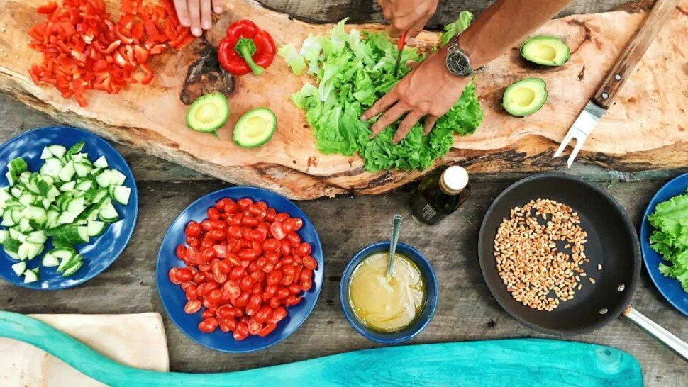

Flexitarisme : le régime flexitarien qu'est-ce que c'est ?

Le régime flexitarien est la combinaison des mots « flexible » et « végétarien ». Globalement, ce type de régime alimentaire est le croisement entre certains principes du régime végétalien et du régime végétarien. Et puisqu'il est semi-végétarien, il permet de consommer des produits d'origine animale, mais sans excès.
En effet, le régime flexitarien se concentre sur les protéines végétales saines et d'autres aliments entiers à base de plantes peu transformés. Par contre, il encourage une consommation de viande et de produits d'origine animale avec modération, ce qui le rend plus simple à suivre pour une grande majorité de personnes.
Selon les études scientifiques actuellement disponibles, cette approche de l'alimentation flexitarienne aurait plusieurs bienfaits sur le long terme. Certaines études relatent que ce régime pourrait aider certains sujets à stabiliser leur poids ou à perdre du poids, et aussi permettre de réduire le risque de maladie cardiovasculaire, le diabète de type 2 ou certains cancers. Cependant, afin de bien planifier les choix alimentaires flexitariens, il est important de prévenir les carences nutritionnelles et de tirer le meilleur parti des bienfaits pour la santé de ce régime.
Le régime flexitarien est un style d'alimentation de plus en plus courant et n'est pas qu'un effet de mode, étant donné qu'il correspond aussi aux évolutions des modes de vie moderne, aux nouvelles avancées en matière de nutrition, et aux contraintes environnementales. De la sorte, les personnes qui souhaitent manger principalement des aliments à base de plantes, tout en s'autorisant de consommer de la viande et d'autres produits d'origine animale avec modération, peuvent s'orienter vers ce type de régime. Ce régime étant plus flexible que les régimes entièrement végétariens ou végétaliens, il peut se suivre sans trop de difficulté.

Sommaire
- Que veut dire flexitarien ? Qu'est-ce que le régime flexitarien ?
- C'est quoi le flexitarisme ? - Vidéo
- Pourquoi devenir flexitarien ? Des bienfaits possibles pour la santé ?
- Quels sont les inconvénients de manger moins de viande et de produits d'origine animale ?
- Comment devenir flexitarien ? Aliments à manger avec le régime flexitarien
- Aliments à réduire ou à supprimer dans le régime flexitarien
- Sources
Que veut dire flexitarien ? Qu'est-ce que le régime flexitarien ?

Définition du flexitarisme (régime flexitarien)
Le régime flexitarien est un style d'alimentation semi-végétarien qui encourage les personnes à manger moins de viande, à supprimer les aliments transformés au maximum, et à consommer plus d'aliments à base de plantes. Parce qu'il n'y a pas de règles ou de suggestions spécifiques, c'est une option attrayante pour les personnes qui cherchent à réduire leur consommation de produits d'origine animale et à améliorer leur régime alimentaire. [1]
La philosophie flexitarienne correspond à des options d'alimentation principalement végétarienne, avec une forte consommation de légumineuses, de lentilles, de tofu ou de noix, mais ce régime tolère de consommer occasionnellement du poulet, du poisson ou de la viande.
Aussi, l'un des axes de réflexion derrière ce régime est la prise en compte de l'environnement et des changements climatiques. De la sorte, le régime flexitarien privilégie, dans la mesure du possible, au maximum des aliments naturels, bio et locaux.
Être flexitarien, est donc une cette option qui favorise les bons aliments, tout en étant suffisamment flexible pour gérer les situations sociales, comme le barbecue familial ou les sorties au restaurant. C'est aussi plus un choix qu'une règle, ce qui est souvent le bémol pour les moins assidus dans certains régimes comme les régimes végétaliens ou végétariens.
La méthode flexitarienne
Initialement, le régime flexitarien a été créé, ou plutôt identifié, par la diététicienne d'origine américaine Dawn Jackson Blatner, dans son livre "The Flexitarian Diet: The Mostly Vegetarian Way to Lose Weight, Be Healthier, Prevent Disease, and Add Years to Your Life", publié en 2010 aux éditions McGraw Hill [2]. Elle a discerné et donné les premiers fondements de ce régime pour aider les gens à profiter des avantages de l'alimentation végétarienne, tout en consommant des produits d'origine animale avec modération.
Les végétariens éliminent la viande et parfois d'autres aliments d'origine animale, tandis que les végétaliens évitent la viande, le poisson, les œufs, les produits laitiers et tous les autres produits alimentaires d'origine animale.
Du fait que les flexitariens mangent des produits d'origine animale, ils ne sont pas considérés comme végétariens ou des végétaliens, et ce régime se rapproche ainsi du régime méditerranéen (ou régime crétois) [3].
De plus, le régime flexitarien n'a pas de règles claires ni de nombres recommandés de calories et de macronutriments, ce qui le rend plus simple et adaptable. Il permet de ne pas créer de grand changement de mode de vie, en comparaison à d'autres régimes.
Les principes de base du flexitarisme, ou régime flexitarien, reposent en particulier sur les faits suivants :
- manger surtout des fruits, des légumes, des légumineuses et des grains entiers ;
- se focaliser sur les protéines végétales plutôt qu'animales ;
- apprendre à être flexible et incorporer de temps en temps de la viande et des produits d'origine animale ;
- manger les aliments les moins transformés et les plus naturels ;
- limiter au maximum le sucre ajouté et toutes les sucreries.
Cependant, il n'est pas nécessaire de suivre toutes les recommandations spécifiques pour commencer à manger de manière flexitarienne.
Certaines personnes suivant ce régime peuvent manger plus de produits d'origine animale que d'autres, car les besoins et le contexte social sont une partie intégrante de ce régime.
Ainsi, l'objectif principal, la pierre angulaire de ce régime, est de manger des aliments végétaux plus nutritifs et moins de viande, sans modifier ni contraindre totalement les habitudes alimentaires [4].
La fomentatrice de ce régime considère qu'une personne est flexitarienne si sa consommation de viande et de produits d'origine animale est supprimée de son alimentation entre 2 et 4 jours par semaine. Le conseil de base est donc de se limiter à 2 ou 3 repas par semaine contenant de la viande et des produits d'origine animale.
Pourquoi devenir flexitarien ? Des bienfaits possibles pour la santé ?
Quels sont les inconvénients de manger moins de viande et de produits d'origine animale ?
Comment devenir flexitarien ? Aliments à manger avec le régime flexitarien
Aliments à réduire ou à supprimer dans le régime flexitarien
Sources
- Les régimes alimentaires : que faut-il savoir ? https://www.le-guide-sante.org/actualites/nutrition/regimes-alimentaires-que-faut-il-savoir
- Dawn Jackson Blatner. "The Flexitarian Diet". https://www.dawnjacksonblatner.com/
- Le régime méditerranéen (ou crétois) : que faut-il savoir ? https://www.le-guide-sante.org/actualites/nutrition/regime-mediterraneen-cretois-que-faut-il-savoir
- INCA 3 : Evolution des habitudes et modes de consommation, de nouveaux enjeux en matière de sécurité sanitaire et de nutrition. https://www.anses.fr/
- Régime végétarien : avantages et inconvénients. https://www.le-guide-sante.org/actualites/nutrition/regime-vegetarien-avantages-inconvenients
- Prenez le pouvoir sur votre santé cardiovasculaire ! https://www.le-guide-sante.org/actualites/sante-publique/sante-cardiovasculaire-conseils-prevention
- Risks of ischaemic heart disease and stroke in meat eaters, fish eaters, and vegetarians over 18 years of follow-up: results from the prospective EPIC-Oxford study. https://www.ncbi.nlm.nih.gov/
- Comparative effectiveness of plant-based diets for weight loss: a randomized controlled trial of five different diets. https://pubmed.ncbi.nlm.nih.gov/
- Diabète de type 2 : surpoids et taux de glycémie élevé. https://www.le-guide-sante.org/actualites/medecine/diabete-type-2-surpoids-glycemie-eleve
- Diabète. OMS. https://www.who.int/
- Les vitamines : carences et excès - de la vitamine A à la vitamine D ! [1/2] https://www.le-guide-sante.org/actualites/nutrition/vitamines-carences-exces-ep-1
- Les lipides et acides gras : le guide. https://www.le-guide-sante.org/actualites/nutrition/lipides-acides-gras-macronutriments-apport-energetique
- Protéines et acides aminés : que faut-il savoir ? https://www.le-guide-sante.org/actualites/nutrition/proteines-acides-amines-que-faut-il-savoir
- Thé : bienfaits et méfaits pour la santé. https://www.le-guide-sante.org/actualites/nutrition/the-bienfaits-mefaits-sante-nutrition
- Quelles tisanes et quelles plantes pour bien dormir ? https://www.le-guide-sante.org/actualites/forme-et-bien-etre/tisanes-plantes-bio-bien-dormir
- Café : bienfaits et méfaits sur la santé. https://www.le-guide-sante.org/actualites/nutrition/cafe-bienfaits-mefaits-sante-nutrition